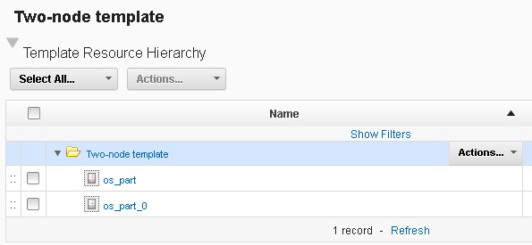

Importing resource templates from clouds
If you have a virtual system pattern on a cloud system, you can import that pattern as a resource template. This resource template is a pattern from which you can provision cloud resources.
Before you begin
For this type of cloud integration, the following cloud
systems are supported:
- IBM® Cloud Orchestrator version 2.4 or later
- IBM SmartCloud® Orchestrator versions 2.2 and 2.3
- IBM PureApplication® System version 1.0 or later
- IBM Workload Deployer version 3.1.0.6 or later
To connect to OpenStack and OpenStack-based clouds, SoftLayer®, Amazon Elastic Compute Cloud, VMware vCenter, or Microsoft™ Azure, see Connecting to clouds through the blueprint designer.
Cloud
Orchestrator and
PureApplication System introduced a new system for virtual system patterns. This new system is referred
to as VSys.Next. The new virtual system patterns are supported on the following
cloud systems:
- Cloud Orchestrator version 2.4 or later
- PureApplication System version 2.0 or later
To connect to OpenStack and OpenStack-based clouds, SoftLayer, Amazon Elastic Compute Cloud, VMware vCenter, or Microsoft Azure, see Connecting to clouds through the blueprint designer.
Procedure
Results
